Forces Libératrices
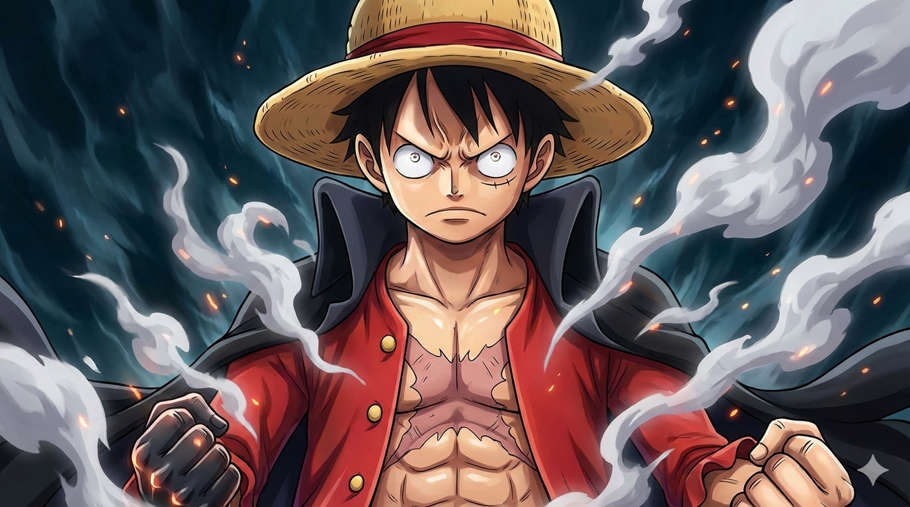
Monkey D. Luffy
PIRATEIl ne cherche ni à conquérir ni à dominer. Son rêve est d'être "l'homme le plus libre des mers". Il incarne le Droit Naturel : il suit sa propre morale plutôt que les lois écrites (Droit Positif) du Gouvernement. Sa justice est instinctive : protéger ses amis et briser les chaînes de l'oppression partout où il passe.
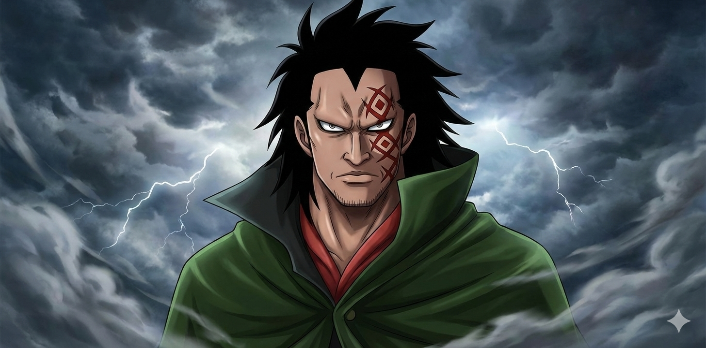
Monkey D. Dragon
RÉVOLUTIONNAIRELe "Pire Criminel du Monde". Contrairement aux pirates qui vivent en marge du système, Dragon attaque le système frontalement. Il ne vise pas la Marine (les soldats), mais les Dragons Célestes (les tyrans). Il incarne la réponse politique et organisée face à l'injustice institutionnalisée (Le Contrat Social rompu).
L'Ordre (La Marine)
"La Justice est une valeur qui change selon celui qui la porte."
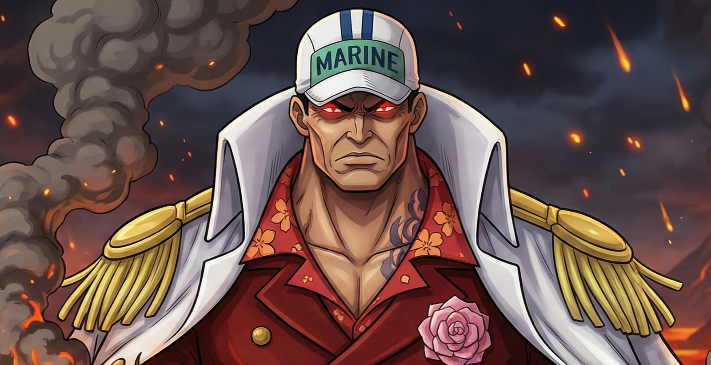
Akainu (Sakazuki)
AMIRAL EN CHEFJustice Absolue
Pour lui, le mal doit être éradiqué à la racine. C'est un utilitarisme radical : si tuer 100 innocents permet d'éliminer 1 terroriste qui menace le monde, il le fera sans hésiter (Exemple : Ohara). La fin justifie les moyens. Il représente l'ordre par la terreur.
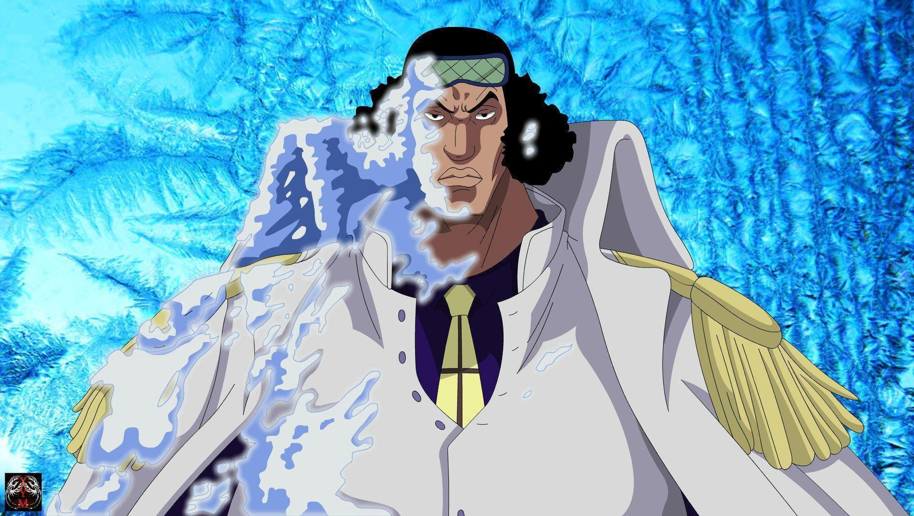
Aokiji (Kuzan)
EX-AMIRALJustice Paresseuse
Il représente la nuance et le doute. Il obéit aux ordres mais garde son humanité. Il peut épargner un ennemi (comme Robin) s'il juge que la loi est trop cruelle ou immorale. Il a fini par quitter la Marine, refusant de servir sous les ordres extrémistes d'Akainu.
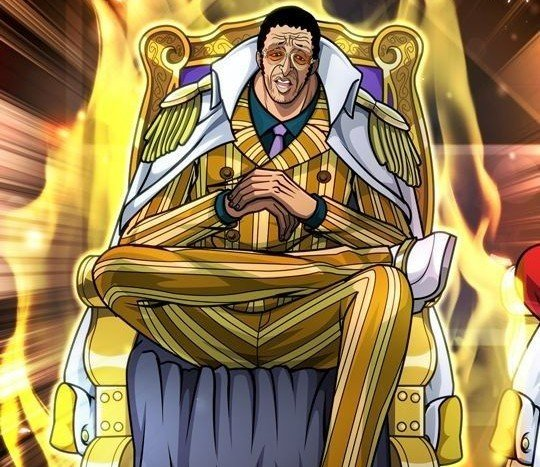
Kizaru (Borsalino)
AMIRALJustice Incertaine
L'archétype du fonctionnaire zélé. Il obéit aux ordres sans se poser de questions morales. C'est l'illustration parfaite de la "Banalité du Mal" (Hannah Arendt) : il ne commet pas le mal par haine, mais par absence de pensée, simplement parce que "c'est le règlement".
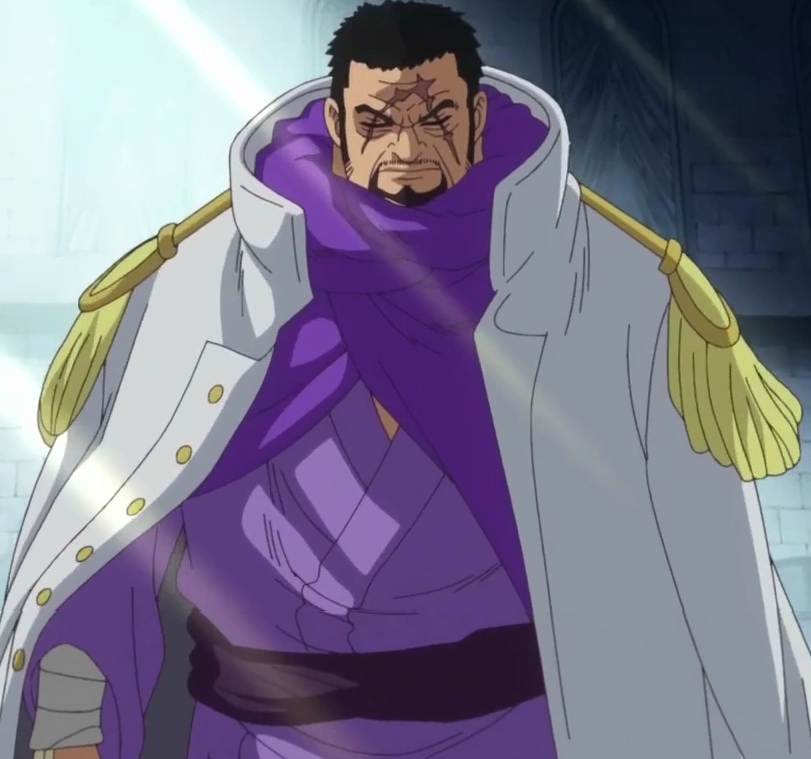
Fujitora (Issho)
AMIRALJustice Aveugle / Vertueuse
Il s'est aveuglé volontairement pour ne plus voir la corruption du monde. Pour lui, la priorité n'est pas de vaincre les pirates, mais de protéger les civils (les "personnes lézées"). Il est prêt à humilier la Marine (s'excuser à genoux à Dressrosa) pour faire éclater la vérité.
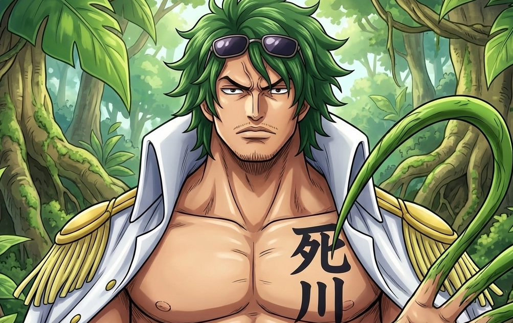
Ryokugyu (Aramaki)
AMIRALJustice Déterminée
Une vision fasciste et darwiniste. Pour lui, les droits de l'homme ne s'appliquent qu'aux citoyens des pays affiliés au Gouvernement. Les autres sont des "sous-humains" qu'on peut tuer. Il pense que "la discrimination crée la stabilité". Il vénère les Dragons Célestes.
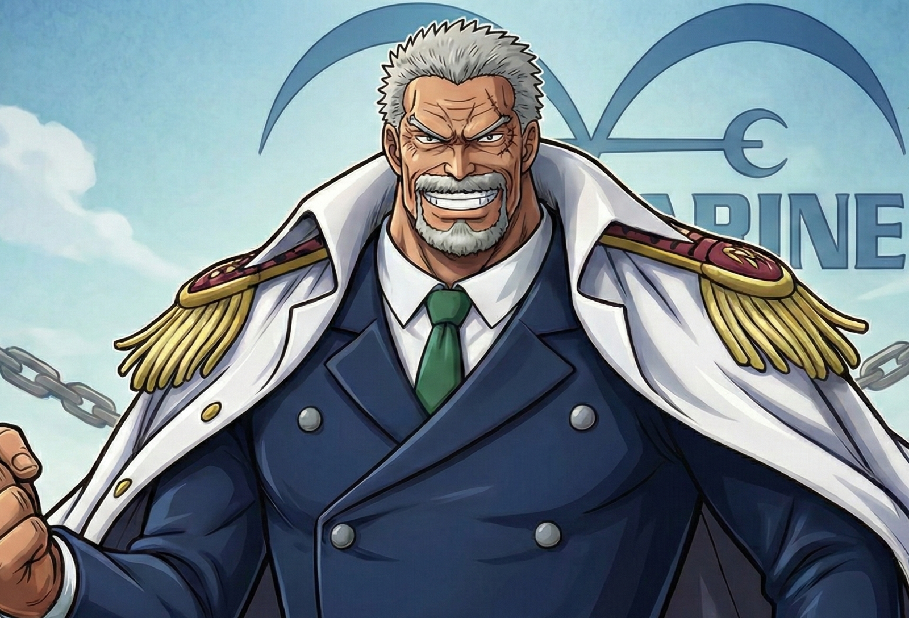
Monkey D. Garp
HÉROSLe Dilemme Moral
Légende de la Marine. Il déteste les Dragons Célestes (qu'il traite d'ordures) mais refuse de quitter l'institution. Pourquoi ? Parce qu'il croit que sans la Marine, les civils seraient livrés aux pirates sanguinaires. Il accepte de servir un système pourri pour protéger les innocents au bas de l'échelle.
Les 3 Grands Pouvoirs (+1)
1. Pouvoir LÉGISLATIF (La Loi)
Officiellement, la "Rêverie" (assemblée des rois) décide. En réalité, ce sont les Dragons Célestes et le conseil des 5 doyens (Gorosei) qui dictent les règles. Ils sont au-dessus des lois. Leurs caprices deviennent des décrets absolus.
2. Pouvoir EXÉCUTIF (Le Glaive)
Le bras armé du Gouvernement.
- La Marine : La face publique. Dirigée par Akainu, elle maintient l'ordre visible, chasse les pirates et protège les mers.
- Le Cipher Pol (CP0-CP9) : L'agence de renseignement et police secrète. Ils opèrent dans l'ombre pour l'espionnage, les assassinats politiques et la protection directe des intérêts des nobles. C'est la "Gestapo" du Gouvernement.
3. Pouvoir JUDICIAIRE (Le Marteau)
Un pouvoir fantoche. Dans One Piece, il n'y a pas de véritable procès équitable. L'île judiciaire d'Enies Lobby est un tribunal où l'accusé est toujours déclaré coupable s'il est un ennemi de l'État. C'est une machine à légaliser les exécutions.
4. Pouvoir MÉDIATIQUE (L'Info)

Détenu par Big News Morgans via le "World Economy News Paper". Ses mouettes distribuent le journal partout.
Morgans manipule l'opinion mondiale. Il peut accepter de l'argent du Gouvernement pour cacher un génocide (Lulusia), ou refuser la censure pour publier un "scoop" sensationnel. Celui qui contrôle l'information contrôle la réalité perçue par le peuple.
Dossiers Noirs & Concepts
Incident de God Valley
Il y a 38 ans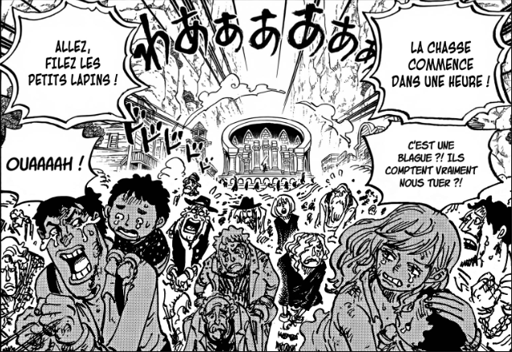
Une île a été rayée des cartes. Les Dragons Célestes y organisaient une "chasse à l'homme" sportive, utilisant les habitants comme gibier.
Concept : Homo Sacer
(Giorgio Agamben). C'est un être humain réduit à l'état de "vie nue" (Zoe). Il peut être tué par le pouvoir souverain sans que ce soit considéré comme un homicide. Pour les Nobles, les humains normaux ne sont pas des citoyens, mais des objets jetables.
L'Effacement de Lulusia
Récent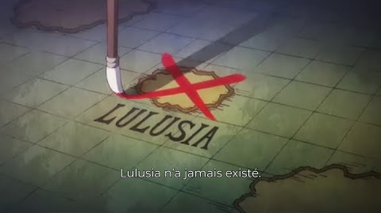
Le Royaume de Lulusia s'est rebellé contre l'impôt céleste. Quelques jours plus tard, une arme aérienne d'Imu a annihilé l'île en une fraction de seconde.
Concept : Damnatio Memoriae
"La condamnation de la mémoire". Le Gouvernement a déclaré : "Le royaume de Lulusia n'a jamais existé". Cela fait écho au décret de 1793 en France : "Lyon n'est plus". Le but n'est pas seulement de tuer, mais d'effacer l'existence même de la rébellion de l'Histoire.
Impel Down : Les 6 Enfers
PrisonLa grande prison sous-marine. Ce n'est pas un lieu de réhabilitation, mais de torture pure.
- Niveau 1-5 : Supplices croissants (Piques, Bêtes, Faim, Feu, Glace).
- Niveau 6 (Enfer Infini) : Caché du monde. On y enferme à jamais les criminels dont l'existence même est un danger (effacement de l'histoire).
Le Complot du CP5 (Tom)
Water 7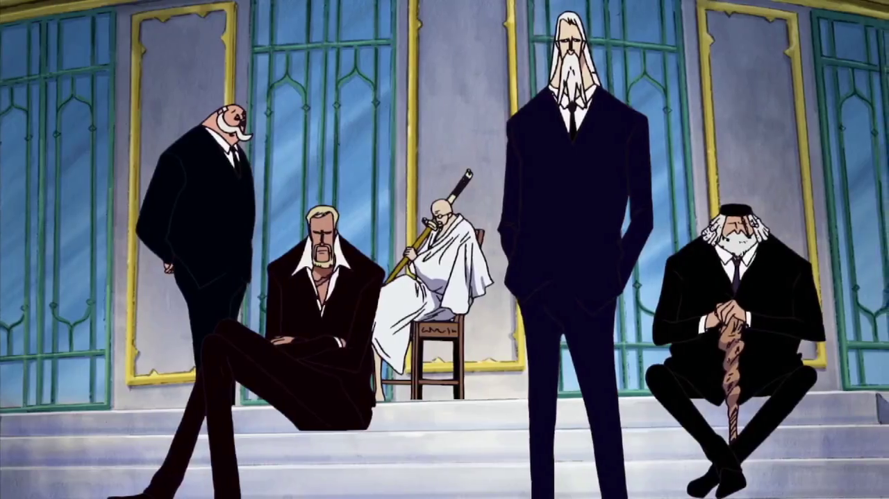
Tom (mentor de Franky) devait être gracié pour la création du Train des Mers. Mais le CP5 (Spandam) voulait les plans de l'Arme Antique Pluton.
Falsification
Le CP5 a utilisé les navires de Franky pour attaquer le navire judiciaire et faire condamner Tom. Tom s'est sacrifié pour sauver ses élèves. Le GM fabrique des coupables pour obtenir des armes.
Concepts & Philo
Force et Justice (Blaise Pascal)
"La justice sans la force est impuissante ; la force sans la justice est tyrannique."
Pascal explique que les hommes, ne pouvant faire que ce qui est "Juste" soit "Fort", ont fait que ce qui est "Fort" soit "Juste".
Dans One Piece, le Gouvernement Mondial a gagné la guerre il y a 800 ans. Ils ont utilisé leur Force pour écrire l'Histoire et définir leur domination comme étant la "Justice". Ils ne sont pas légitimes moralement, ils sont juste les plus forts.
Droit Naturel vs Positif
Droit Positif (La Loi Écrite)
C'est la loi définie par l'État (la Marine). Selon cette loi, l'esclavage des Hommes-Poissons est légal, et frapper un Dragon Céleste est un crime de mort. Akainu défend ce droit.
Droit Naturel (La Morale)
Ce sont les droits humains universels (liberté, dignité), supérieurs aux lois. Quand Luffy frappe un noble pour sauver un ami, il viole la Loi pour rétablir la Justice morale.
Hannah Arendt
La Banalité du Mal
Illustrée par Kizaru. Le mal n'est pas toujours commis par des monstres, mais par des fonctionnaires qui "font juste leur travail" sans réfléchir. Kizaru détruit des vies avec le sourire, simplement parce que c'est l'ordre reçu.
La Personne Lézée
Illustrée par Fujitora. La justice ne doit pas servir l'État, mais réparer le tort fait à la victime. À Dressrosa, Fujitora s'excuse auprès du Roi Riku (la personne lézée) au lieu de sauver la réputation de la Marine.